For most of this chapter, we have restricted ourselves to functions that were either linear functions or polynomial functions where they are built from the interaction of linear functions. While this makes the economic models easier to understand, it is pretty clear that the situations we care about are often better described by more complicated functions. Suppliers of gasoline have a finite amount they can deliver regardless of the price. That leads to a very nonlinear supply function. It is worthwhile to review how we would enter other functions in a spreadsheet.
Subsection2.3.1Algebraic Functions
We start with the algebraic functions that should be familiar from previous courses. These functions will let us use all the models that were mentioned in Chapter 1. For this table, we will assume the input to the function has been stored in cell A1.
Algebraic Entry
Spreadsheet Entry
Notes
\(f(x)=\sqrt{2x+7}\)
=SQRT(2*A1+7)
* needed for multipliciation
\(f(x)=\sqrt[3]{2x+7}\)
=(2*A1+7)^(1/3)
other roots done as fractional exponents
\(f(x)=x^4\)
=A1^4
\(f(x)=-x^4\)
=-1*(A1^4)
Excel does negation before exponentiation
\(f(x)=\ln(x)\)
=LN(A1)
Log base \(e\) or natural log
\(f(x)=\log_{10}(x)\)
=LOG10(A1)
Log base 10 or common log
\(f(x)=\log_{2}(x)\)
=LOG(A1,2)
Log to another base
\(f(x)=1.06^x\)
=1.06^(A1)
\(f(x)=e^x\)
=EXP(A1)
\(f(x)=e^{(-x^2)}\)
=EXP(-(A1^2))
Parentheses needed for correct evaluation
\(f(x)=|x|\)
=ABS(A1)
Absolute value
Consider a demand function and why it is probably not linear. We expect demand to go up whenever we drop the price. However, with a linear function, if dropping the price from $100 t0 $50 increases the demand by 20 from 100 to 120, then decreasing the price from $50 to $0 and giving it away would only increase demand by another 20 to 140. A more reasonable model may be a power function where decreasing the price by a fixed percentage increases consumption by a fixed percentage. Similarly, when we think about the supply function, we often expect the limits on available materials to make increasing the supply progressively more expensive.
Example2.3.1.Exponential Supply and Demand Price.
Figure2.3.2.Video presentation of this example
We are interested in selling gizmos. The most a consumer will pay is $1,000. If we drop the cost by 10\%, we increase demand by 100. The cheapest that a supplier will sell for is $200. We find the market will produce another 100 gizmos whenever we increase the price by 20%. Find the market equilibrium.
Solution.
We start by converting our information about supply and demand into equations, plugging the equations into Excel, and sketching a graph. We then use Goal Seek to find where the two equations are equal.
We see that the equilibrium price is at $554.64. At that price the supply and demand will both be 559.45.
Example2.3.3.Nonlinear Functions From Data.
Figure2.3.4.Video presentation of this example
We have the following table of data for demand price and costs for our product.
Quantity
100
300
500
1000
1500
Demand Price
$35.35
$21.63
$17.25
$12.70
$10.26
Costs
$2347.67
$5040.00
$7481.67
$12469.67
$16196.00
We have reason to believe that my demand price is a power function of some kind. Our cost function is close to linear, but we can get volume discounts and reduce the per-unit cost with larger quantities. Thus, we expect my cost function is actually quadratic, with the quadratic term much smaller than the linear term. Find best fitting curves for cost and price. Derive functions for revenue and profit. Find break-even points between 10 and 1500.
Solution.
I start by finding best-fit curves of for cost and price.
Finally, we load these equations back into Excel and use Goal Seek to find the break-even points. Looking at projected profit on the chart we see a sign change near 1000, so we suspect a break-even point there. We also note that profit seems to be going up until \(q\) is about 300, so I test for a break-even point for small values of \(q\text{.}\)
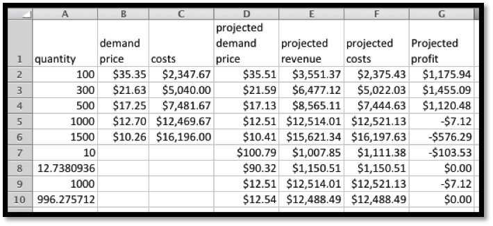
We see we have break-even points when q is 12.74 and 996.28.
Subsection2.3.2Discontinuous Functions
All of the functions above have graphs without breaks. In mathematical terms, they are continuous functions. When we are modeling real world phenomena, we also want to use functions that have breaks in the graph. Paint is typically bought in gallon containers, so the price to paint a room is based on the number of gallons rounded up to the next whole number. Many businesses will give a volume discount to their best customers, so there is one price for small quantities and a different price for large quantities. The cost of labor changes if overtime pay is involved. In all of these cases, the graph has a break in it.
Excel has several discontinuous functions that are of use to us.
Function
Example
Value
Notes
ROUND
ROUND(2.347,1)
2.3
2.35 would round to 2.4
ROUNDDOWN
ROUNDDOWN(2.99,0)
2.0
0 for digits rounds to integers
ROUNDUP
ROUNDUP(-2.132,2)
-2.14
Up is away from 0.
CEILING
CEILING(3.14159,1.5)
4.5
Rounds up to a multiple of 1.5
FLOOR
FLOOR(3.14159,2)
2
Rounds down to a multiple of 2.
IF
IF(\(2 \lt 1\text{,}\)5,10)
10
The condition is false.
MIN
MIN(1, 3, 5)
1
The minimum of a list of values.
MAX
MAX(1, 3, 5)
5
The maximum of a list of values.
The functions ROUND, ROUNDUP, and ROUNDDOWN are all used for rounding. They have a second argument that specifies the number of digits to which we are rounding. It should be noted that Excel understands up and down as away from zero for negative numbers. Thus it will round \(-1.5\) up to \(-2\text{.}\) The CEILING and FLOOR functions also do rounding, but with some different features. Instead of specifying the number of digits in the answer, these functions round to a multiple of the second argument. As expected, CEILING rounds to the next higher multiple, and FLOOR rounds to the next lower multiple.
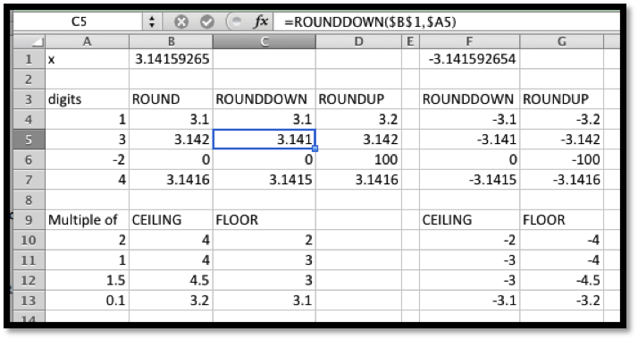
Figure2.3.5.Video discussion of discontinuous functions in Excel
Example2.3.6.Raw Materials in Blocks.
Figure2.3.7.Video presentation of this example
The raw material needed to build widgets is sold in blocks that will make 100 widgets. A block costs $1000. The labor cost for building a widget is $7. The fixed costs for widget production is $10,000. Find a formula for the costs of producing widgets. Find the cost of producing 998 and 1009 widgets. You should also find the cost per unit at those quantities.
Solution.
To make the worksheet easier to follow, we break costs into three pieces, fixed costs labor costs, and materials costs. The fixed coasts are constant, and the labor costs are linear. For the materials costs we need to use the CEILING function to round the number of widgets up to the next even 100, then divide by 100 to obtain the number of blocks of raw material we want to buy.
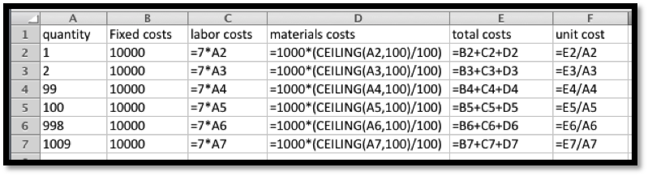
When we look at the numbers we see that the total cost of producing 998 widgets is $26,986 and the cost of producing 1009 widgets is $28,063. When we look at the unit costs, we expect the cost per unit to generally go down as we produce more, since the fixed costs are distributed over more units. However the per unit cost is $27.04 when we produce 998 widgets, but that goes up to $28.81 when we make 1009 widgets, since we had to buy another block of raw material.
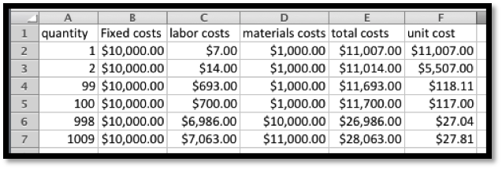
The IF command is used when we use different formulas for different cases. Some easy examples are overtime pay, benefits costs, and volume discount. In many work situations employees are paid one rate up to a certain amount of work and a second rate for additional work. It is also common for full time employees to receive certain benefits, like retirement, that are not offered to part time employees. It is also common for certain industries to offer different rates for their biggest and best customers. The basic syntax of the IF command is:
IF(test condition, value if condition is true, value if condition is false)
The values for true and false can be numbers, string, or formulas to evaluate.
Example2.3.8.Computing Overtime Pay.
Figure2.3.9.Video presentation of this example
I am a bookkeeper at a small firm. Company policy pays the employees time and a half for working more than 40 hours per week. I need to compute the weekly pay of 5 employees. The employees worked 35, 42, 43, 38, and 42.5 hours. Their base pay rates were respectively $8, $9, $10, $11, and $12 an hour. Compute the pay for each employee.
Solution.
In setting up the worksheet, I will separate regular pay from overtime pay. The regular pay is the base rate times the hours worked, unless the employee worked more than 40 hours, in which case it is the base rate times 40. Overtime pay is the base pay times 1.5 times the number of overtime hours. Since overtime cannot be negative, we use the maximum of 0 and hours worked minus 40.
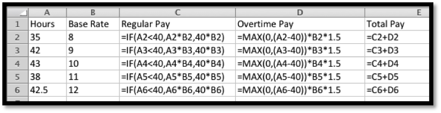
Looking at the computed values, the employees are owed $280, $387, $445, $418, and $525, respectively.
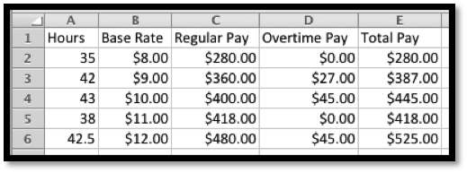
If our functions are discontinuous, we need to exercise a bit of care with our economic models and the points of interest we have been finding. The market equilibrium and break-even points are both places where two functions are equal. When the mathematics does not give us a clear answer, we should think about the problem and consider what answer makes the most sense. Consider a simplified example to illustrate the point.
Example2.3.10.Market Equilibrium with Discontinuous Supply Price.
Figure2.3.11.Video presentation of this example
In the widget market, the supply is constrained. Obtaining more than 2 widgets means using a more expensive process. My supply and demand curves are:
We would like to find the place where the two curves cross. However when we look at a graph of the two functions we see that they never meet.
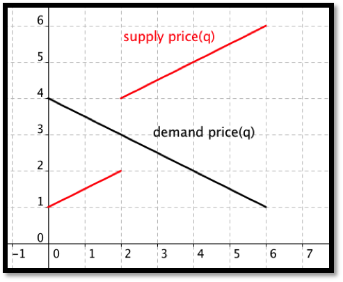
It is clear from the graph that the market should reach equilibrium at a quantity of 2, but it is not clear what the equilibrium price should be. We need to do some reasoning about the behavior described by the equations. From our formula, the supply price for 2 widgets is $2. However if we look at the supply prices of \(2+h\) for small values of \(h\text{,}\) we see that the limit of the supply price from above is $4. In practical terms the suppliers will produce 2 widgets for any price from $2 to $4. If we offer $2, they are also willing to produce 2 widgets. If we offer a price of $3.95, they are still only willing to produce 2 widgets. The suppliers will be thus willing to produce 2 widgets at a price of $3. The equilibrium price is 3.
If we want to look at the graph in Excel, it is useful to plot points very close to the discontinuity on both sides. For this problem, we might look at both 2 and 2.0001.
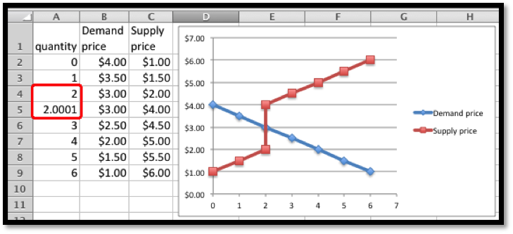
A lesson to remember is that we need to pay attention to places where our functions are discontinuous and that we need to understand what our economic model should do when the curves do not cross. For example, we will understand the break-even point to be the first point where revenue is greater than or equal to costs. In the continuous case, this reduces to our old definition.
Reading Questions2.3.3Reading Check
1.Reading check, Nonlinear Functions.
This question checks your reading comprehension of the material is section 2.3, Nonlinear Functions, Costs, and Profit, of Business Calculus with Excel. Based on your reading, select all statements that are correct. There may be more than one correct answer. The statements may appear in what seems to be a random order.
ln(x) is used for the natural log of x, or log base e.
All real world cost functions are continuous.
The CEIL command can be used to roundup.
Excel does negation before exponentiation.
The commands ROUND, ROUNDUP, and ROUNDDOWN can be used interchangeably.
For the FLOOR command we specify the number of digits past the decimal point in the rounded number.
In Excel \(e^x\) is written EXP(x).
The if construction can be used in Excel for a function with branches.
For the ROUND command we specify the number of digits past the decimal point in the rounded number.
In the real world, the demand function is probably not linear.
For this problem our supply price function changes at \(q = 50\text{.}\) This is indicated in the table by a thin blue column.
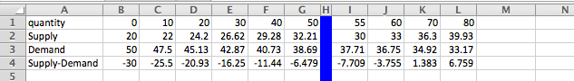
At \(q_0=40\text{,}\) supply = $29.28, and demand = $40.73
The equilibrium occurs somewhere between \(q = 60\) and \(q = 70\text{.}\) Using Goal Seek we find that the equilibrium occurs for \(q = 62.43\text{.}\)
The cost of shipping an item is $2 per pound, or fraction thereof, with a minimal cost of $5.
Solution.
The function is =MAX(2*A2,5)
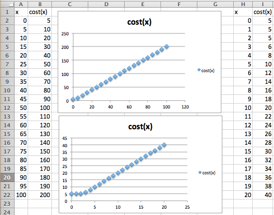
See the graph above. This function will return \(y = 2x\text{,}\) unless the output drops below 5. It is thus also useful to look at this function between 0 and 20 in steps of 1.
The graph has a slight bend on the lower left, but there is no discontinuity.
12.
Widgets cost $10 each when purchased individually. They cost $9 each when purchased in packages of 10. They cost $8 each when purchased in cases of 50.
13.
Gizmos cost $10 each for the first 9 on an order. The 10th through 49th gizmo cost $9 each. Additional gizmos beyond that each cost $8.
The Excel command is =IF(A2 < 10, 10*A2, IF(A2 < 50, 90+9*(A2-9),450+8*(A2-49)))
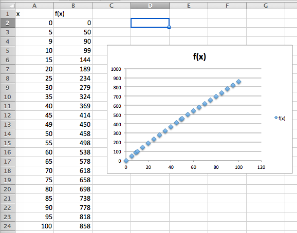
The graph is on the chart above.
Note that this function is only defined for integers so technically it is not a continuous function at all. If we use the same definition for all reals as long as the pieces change at 9 and 49. Note however that the slopes change at 9 and 49.
14.
Let \(f(x)\) be the minimum of \((x-50)^2/25\) and 50.
15.
The cost of parking is $5 per hour rounded to the nearest half hour. For the chart of the values let x goes from 0 to 4 in steps of 0.2.
The initial table does not include the break-even points.
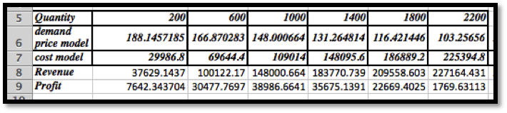
So we redo the table starting with q=0 and taking steps of 400. Goal Seek on the quantity q =0 reveals the first break even point to be at \(q = 107.27\text{.}\)
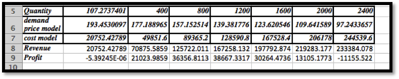
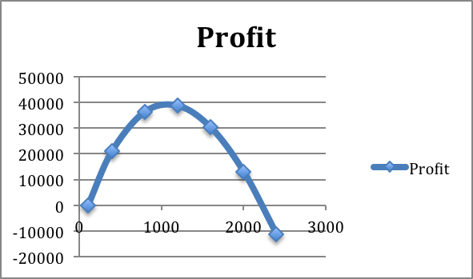
22.
Given demand price is a linear function and cost is a quadratic function fitting the data below and that \(q_0=800\text{.}\)